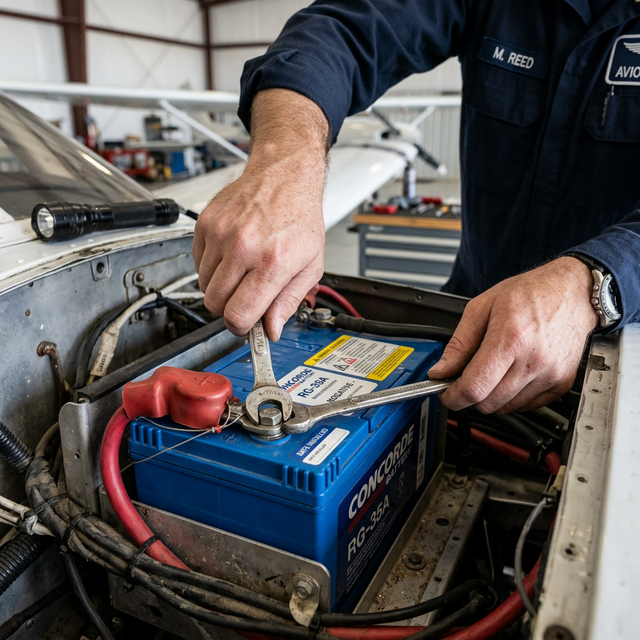

Batteries and grounding/bonding
Module Objectives
- Identify the correct mandatory sequence for disconnecting and reconnecting an aircraft battery.
- Explain the physical rationale behind the "negative first" disconnect rule.
- Define the three primary purposes of airframe bonding jumpers.
Why Does This Matter?

A new technician is assigned to remove a 24-volt battery from a tightly packed nose bay. They reach their steel wrench in and attach it to the positive terminal first to loosen the nut. While turning, the end of the wrench taps the aluminum airframe mounting bracket. Instantly, a blinding arc flash vaporizes the tip of the wrench, throwing molten metal into the technician's face and starting a small fire. This violent, highly dangerous situation is completely preventable by following one absolute procedural rule.
What You Need To Know
Battery Role in the DC System
The aircraft battery is the foundation of the DC system. It provides:
- 1. Initial power to spin the high-draw starter motor and excite the alternator field.
- 2. Emergency backup power if the alternator fails in flight (often limited to 30-45 minutes).
- 3. Voltage buffering to absorb electrical transients and spikes from the alternator, acting like a massive capacitor.
The Disconnect Sequence Rule
Virtually all general aviation aircraft use a negative ground system, meaning the entire metal aluminum airframe is the negative return conductor for the circuit.
When disconnecting an aircraft battery, you MUST follow this order:
- 1. Remove the NEGATIVE (ground) cable FIRST.
- 2. Then remove the POSITIVE cable.
The Physics behind the rule: If you leave the negative attached, the entire airframe is alive. If your wrench touches the positive terminal and the airframe simultaneously, you create a dead short with zero resistance, unleashing hundreds of amps instantly. If you disconnect the negative terminal *first*, the battery is isolated from the airframe. Now, even if your wrench slips off the positive terminal and hits the airframe, absolutely nothing happens, because the circuit path to the battery's negative post has already been severed.
When reconnecting, reverse the order: Positive first, Negative last.
Bonding and Grounding
A bonding jumper is a short, braided metal strap or conductor that creates a low-resistance electrical path between an avionics component (or flight control surface) and the main aircraft structure.
In avionics, strict bonding serves three crucial purposes:
- 1. Current Return Path — In a single-wire system, bonding ensures current has a low-resistance path back to the battery/alternator.
- 2. EMI / Static Eradication — Equalizes the electrical potential between all components, preventing static buildup, ground loops, and radio frequency interference (audio whine).
- 3. Lightning Protection — Provides a controlled, massive-capacity dissipation path for lightning energy to flow harmlessly through the skin rather than cooking the avionics.
System Visualization
graph TD
A[Instruction: Remove Battery] --> B[Step 1: Locate NEGATIVE Terminal]
B --> C[Step 2: Disconnect and Secure NEGATIVE Cable]
C --> D[Battery is now electrically isolated from airframe]
D --> E[Step 3: Disconnect POSITIVE Cable]
E --> F[Safe Removal]
C -.->|Wrench slips on Positive post| G[No Arc Flash - Circuit Broken]
style B fill:#1e40af,stroke:#1e3a8a,stroke-width:2px,color:#fff
style C fill:#1e40af,stroke:#1e3a8a,stroke-width:2px,color:#fff
style G fill:#166534,stroke:#14532d,stroke-width:2px,color:#fff
On The Job
When dealing with batteries, recite the mantra: "Negative Off First, Negative On Last." Never deviate from this. When troubleshooting audio interference (like a whine in the headsets when transmitting or when the strobes fire), the very first physical check should be the bonding straps on the radio trays, the engine mount, and the airframe ground block. A loose or corroded bonding jumper is the culprit 80% of the time.
Reference Terms
Aircraft battery — role in DC system
The battery is the initial power source: it powers avionics, fuel pump, and starter motor during engine starting. Once the engine is running and up to speed, the alternator (or generator) takes over as the primary power source and recharges the battery.
Battery disconnect — correct sequence
Always remove the NEGATIVE (ground) cable FIRST when disconnecting a battery. If a tool touches the airframe while removing the positive cable with the negative already disconnected, no circuit is completed — no spark. Removing positive first risks a short if the tool contacts the airframe.
Bonding jumper — purpose
A bonding jumper creates a low-resistance electrical path between a component and the aircraft structure. Three purposes: (1) current return path (grounding), (2) lightning protection (provides controlled dissipation path), (3) EMI reduction (prevents static buildup and ground loops).
Bonding jumper — current return and static discharge
Bonding jumpers provide two key functions: (1) current return — the low-resistance path for DC current to return from loads back to the battery/bus through the airframe, and (2) static discharge — preventing static charge buildup that could cause interference or spark ignition near fuel.
Negative Ground System
An electrical architecture where the metal airframe serves as the common return path to the battery's negative terminal.
Bonding Jumper
A braided conductor ensuring a low-resistance connection between isolated components and the airframe structure.
Arc Flash
A violent, explosive release of heat and light caused by an unintended low-resistance short circuit across high-amperage terminals.
Assessment Check
Disconnect the negative terminal first to physically prevent catastrophic short circuits, and ensure all avionics are heavily bonded to the airframe to eliminate EMI. --- ---